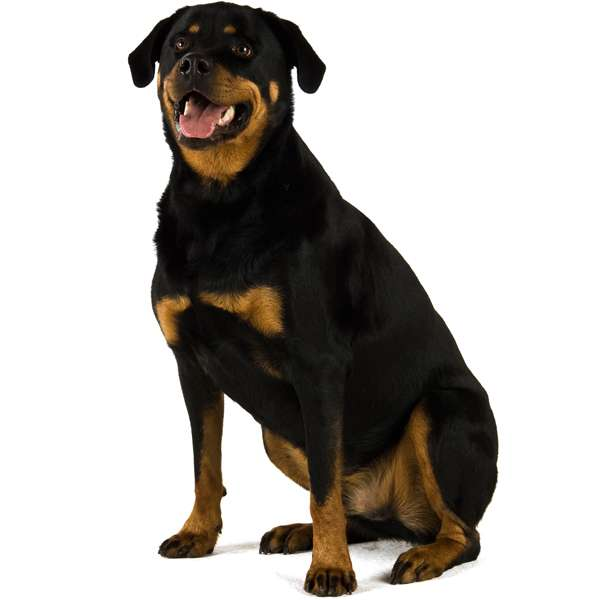

Il cane (Canis lupus familiaris) è un mammifero carnivoro ascritto al genere Canis (famiglia canidi). Con la domesticazione si è distinto dal suo predecessore, il lupo, del quale rappresenta una forma neotenica (anche se al riguardo c'è ancora qualche divergenza) e rispetto al quale ha canini meno aguzzi, intestino più lungo, ed è privo di artigli affilati.
clicami per ritornare alla pagina prima 